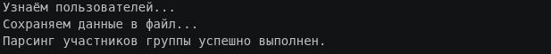
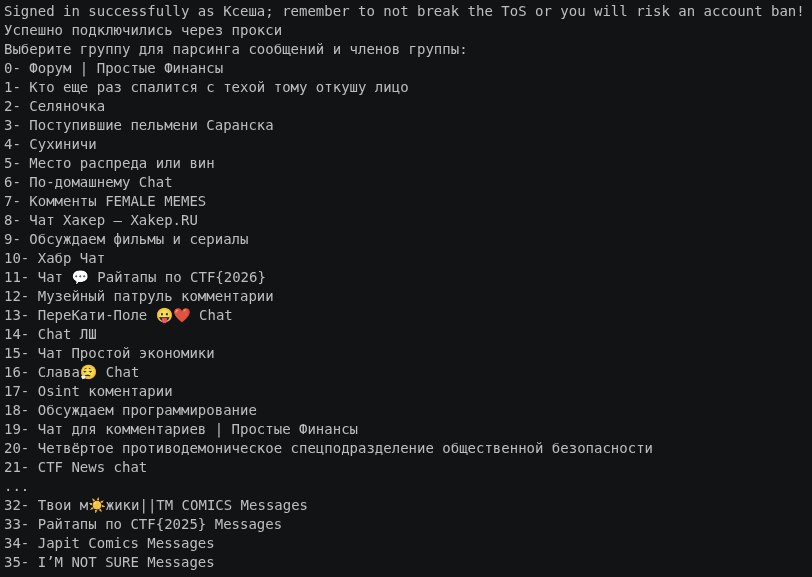
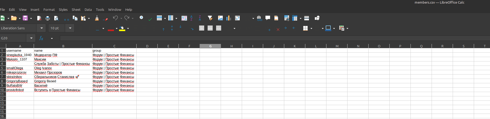

Парсер для Telegram-сообщений
Инструмент для автоматизированного сбора и обработки данных из Telegram-каналов и чатов. Проект получает сообщения через Telegram API, извлекает нужную информацию и сохраняет результат в структурированном виде для дальнейшей работы.
Задача
Нужно было автоматизировать сбор большого объёма данных из Telegram, убрать ручную обработку сообщений и подготовить удобную выгрузку для последующего анализа.
Что реализовано
- Подключение к Telegram API
- Сбор данных из каналов и чатов
- Асинхронная обработка сообщений
- Фильтрация и извлечение нужных данных
- Экспорт результатов в CSV
Стек
Результат



×

Получился рабочий инструмент, который автоматически собирает данные из Telegram-источников и сохраняет их в удобном формате. Это ускорило обработку информации и сократило объём ручной работы.
Назад к проектам